Bot steuern
Wireds:

WIRED Auslöser: Effekt wiederholen
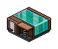
4 x WIRED Auslöser: Habbo tritt auf Gegenstand
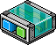
4 x WIRED Effekt: Möbel bewegen und drehen
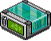
WIRED Effekt: Bot bewegt sich zu Möbel
Möbel:
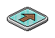
4 x Bodenplatte mit Pfeil
Allgemein:
In manchen Events gibt es Spiele, wo Bots gesteuert werden müssen. Mit einem Steuerkreuz aus Pfeilplatten wird meistens eigentlich zunächst nur ein Möbel gesteuert, welches kaum sichtbar ist. Der Bot wird dann so eingestellt, dass er diesen Möbel folgt.
Einstellung:
In allen "Möbel bewegen und drehen" Wireds wird der Blob ausgewählt. Pro bewegen und drehen Wired wird eine (andere) Richtung ausgewählt.
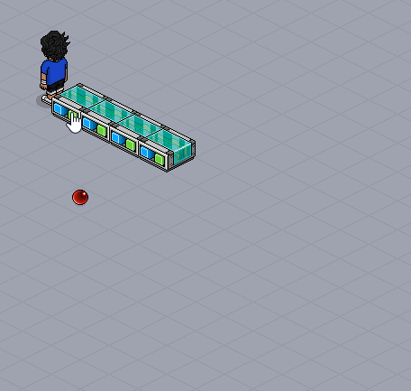
Jedes bewegen und drehen Wired ist für eine Richtung verantwortlich
Einstellungshilfe:
Der Blob kann mit dem Befehl :furni gefunden werden (setzt HC voraus). Oder man schaltet den Countdown-Timer ein und pausiert ihn, dann kann der Blob wie andere Möbeln behandelt werden. Ist der Timer abgelaufen oder aus dem Raum, deaktiviert sich der Blob wieder.
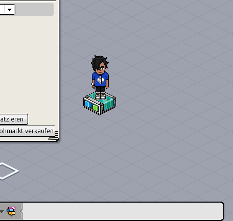
Blob mithilfe des Befehls :furni auswählen
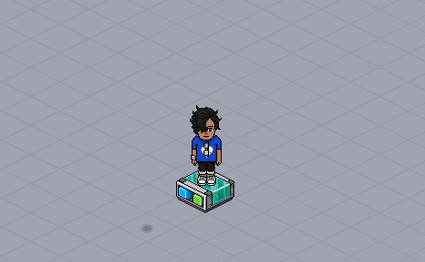
Blob mithilfe des Timers auswählen
Das Steuerkreuz wird mit den Pfeilplatten wie folgt aufgebaut:
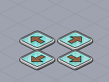
Steuerkreuz mit Pfeilplatten
In den Tritt-auf Wireds wird jeweils eine andere Platte ausgewählt.
Tritt man auf eine bestimmte Pfeilplatte, soll sich der Blob in die Richtung bewegen, in der die Platte zeigt. Dazu werden die Tritt-auf Wireds auf die bewegen und drehen Wireds gestellt. Aber so, dass die Pfeilrichtung der Platte mit der eingestellten Pfeilrichtung übereinstimmt.
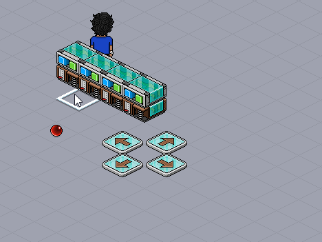
Die Richtungen der Platten müssen mit der eingestellten Richtung im Wired übereinstimmen
Jetzt kann der Blob gesteuert werden:
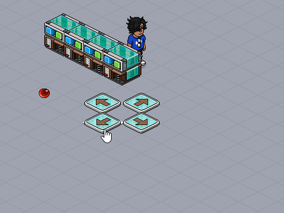
Der Blob wird gesteuert
Das Wired "Bot bewegt sich zu Möbel" sorgt dafür, dass der Bot den Blob verfolgt. Im Wired wählt man den Blob aus und schreibt den Botnamen rein (auf Groß- und Kleinschreibung achten!).
Bot bewegt sich zu Möbel wird mit Effekt wiederholen permanent (0,5 Sek) ausgelöst.
So sieht das Endergebnis aus:
Habbo Unity Version:
Hast du gewusst?
Wenn im Spiel ein Countdown-Timer verwendet wird und man den Blob trotzdem deaktiviert haben will, kann man das mit dem Wired "Möbelzustände umschalten" ändern. Als Auslöser kann "Spiel beginnt" verwendet werden, die Effektzeit sollte dann bei 0,5 Sek liegen, da es sonst zu früh ist.
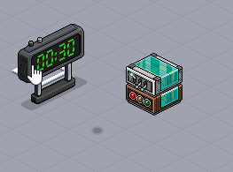
Mit diesem Wired-Stapel kann man den Blob deaktivieren
Wenn man HC hat, kann man auch die grünen Blobs verwenden, die sich nicht direkt aktivieren, wenn der Timer startet (erst mit Möbelzustände umschalten während der Timer läuft). So spart man sich die Einstellung von oben. Jedoch kann es aufwendig sein mit :furni zu arbeiten, besonders, wenn viele Möbel im Raum sind. Eine bessere Alternative bietet das Möbel "Fliegende Laterne". Nachdem man dieses verwendet hat, führt es eine Animation aus, danach ist nur noch der Schatten übrig (lässt sich wieder rückgängig machen durch erneutes verwenden). In diesem Zustand kann man das Möbel ganz normal auswählen, bewegen usw.
|
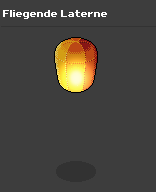 Fliegende Laterne
|
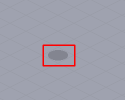 Fliegende Laterne nach der Animation
|